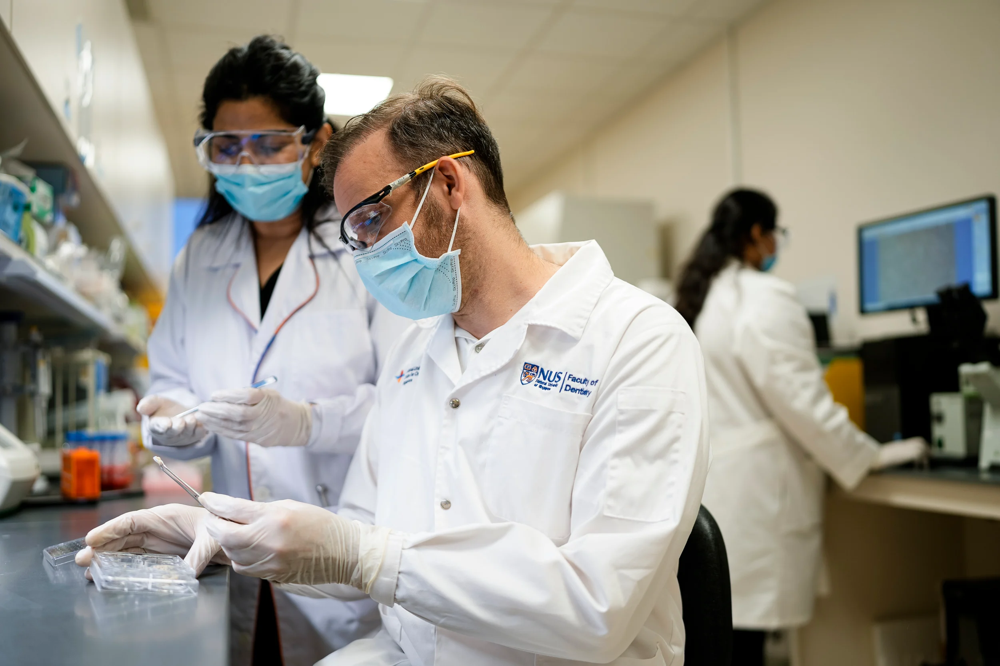

Berita Harian features the NUCOHS Tooth Tissue Bank
Singapore’s Malay-language daily covers the NUCOHS initiative to preserve tooth tissue for regenerative research — bringing the science of dental stem cells to a new audience.

Berita Harian, one of Singapore’s four official-language newspapers, published a feature on the NUCOHS Tooth Tissue Bank — an initiative that collects and preserves dental pulp and periodontal ligament tissue from extracted teeth for use in regenerative research. The feature introduced Malay-speaking readers to the scientific rationale behind the bank: to build a resource that enables the study of human dental stem cells and supports future tissue-engineering therapies.
A/P Rosa has been among the key scientists involved in developing the tooth tissue bank. His research group’s work on dental pulp stem cells, hydrogels for pulp regeneration, and the biological characterisation of dental tissues directly informs how the bank is designed and what research it makes possible. The Berita Harian feature helped communicate this science to a community that may not typically encounter it through academic channels.
A tooth can outlive the patient — and that permanence is the foundation of the bank.
The NUCOHS Tooth Tissue Bank represents an important scientific infrastructure investment for Singapore. By systematically collecting tissue from procedures at the National University Centre for Oral Health Singapore, it creates a long-term resource for human dental stem cell research — a cornerstone of efforts to develop biologically based regenerative therapies for the dental pulp and periodontium. The bank also positions Singapore as a regional hub for dental regenerative science.